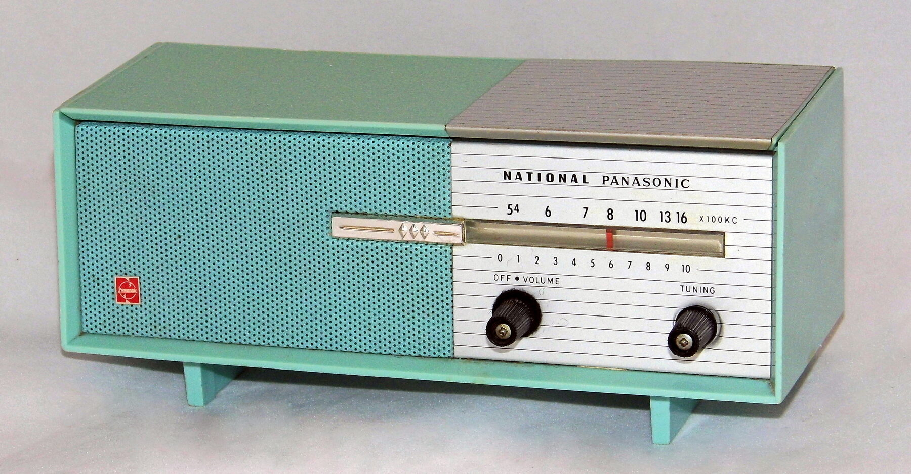

Rhythm of the Rain by The Cascades is racking up new streams on TikTok.
A short clip built around its opening notes is pulling the 1963 hit back into earshot.
The clip is new, but the song and its story are just as real as they were in 1963.

Table of Contents
The Story Behind Rhythm of the Rain
Cascades lead singer John Claude Gummoe wrote the song alone in 1962.
He got the title first, standing a night watch aboard the USS Jason.
Heavy rain was falling across the north Pacific during his US Navy service.
The melody came afterward, picked out on the black keys of a piano.
Built at Gold Star Studios
The Cascades cut the track at Gold Star Studios in Los Angeles.
Producer Barry De Vorzon added the thunder-and-rain effect that opens the record.
Engineer Stan Ross ran the session, and arranger Perry Botkin Jr. built its celesta hook.
Studio players Hal Blaine, Carol Kaye, and Glen Campbell, all later tied to the Wrecking Crew, played on it.
Chart Success in 1963
Valiant Records released the single in the US in November 1962.
The UK release followed on January 25, 1963.
It climbed to number 3 on the Billboard Hot 100.
It also spent two weeks at number 1 on Billboard's Easy Listening chart.
The song also topped charts in Canada and Ireland, and reached number 2 in Australia and number 5 in the UK.
BMI later named it the ninth most performed song of the 20th century.
French singer Sylvie Vartan recorded her own version, "En écoutant la pluie."
Her version reached number 1 in France within months.
Dozens of artists have covered the song since, including:
- Gary Lewis & the Playboys (1969)
- Dan Fogelberg, a Top 3 Adult Contemporary hit in 1990
- Jason Donovan, a UK Top 10 hit the same year
Why It's Trending on TikTok Now
A TikTok account called Music From the Past posted a short clip built around the song.
It's part of a wider wave of 1960s oldies resurfacing for new listeners.
The clip pairs the recording with a stylized AI-generated image, not archival footage.
The audio underneath it is still the real 1962 recording, thunder effect, celesta hook, and all.
Clips like this are how a song written aboard a Navy ship in 1962 keeps finding new listeners today.
A track that never had its own video footage now has TikTok as its first visual companion.
FAQ
Who wrote it?
Cascades lead singer John Claude Gummoe wrote it alone in 1962.
He started with the title during a Navy watch in a Pacific rainstorm.
What is the song about?
It's a heartbreak song.
Falling rain stands in for the singer's tears over a lost love.
How did it perform on the charts in 1963?
It reached number 3 on the Billboard Hot 100 and number 1 on the Easy Listening chart.
It also hit number 1 in Canada and Ireland, number 2 in Australia, and number 5 in the UK.
Why is it trending on TikTok now?
The account Music From the Past posted a short clip built around the recording.
It's part of a wider wave of 1960s oldies resurfacing for new listeners.
Does the TikTok video use real 1960s footage?
No, the visual is a stylized AI-generated image.
The audio is the genuine 1962 recording by The Cascades.
This one joins the rest of the Trending section, where 1960s songs having a moment right now land.
For a wider taste of the decade, try the 1960s music personality quiz or the 1960s trivia game.
Back to the 1960smusic.net homepage to explore more of the era Rhythm of the Rain came from.